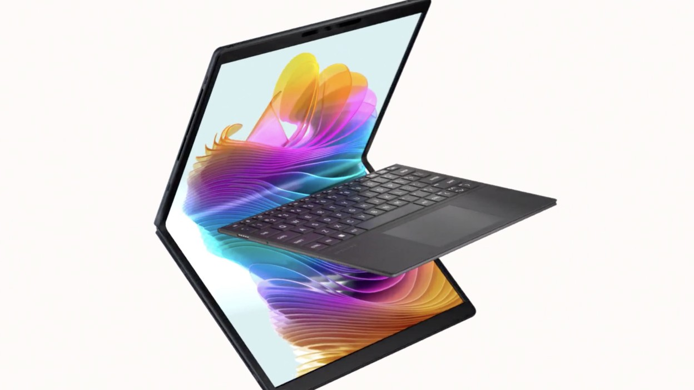
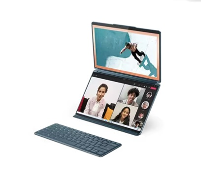
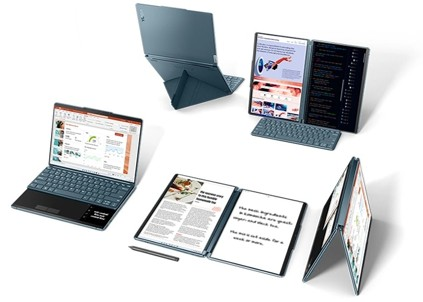
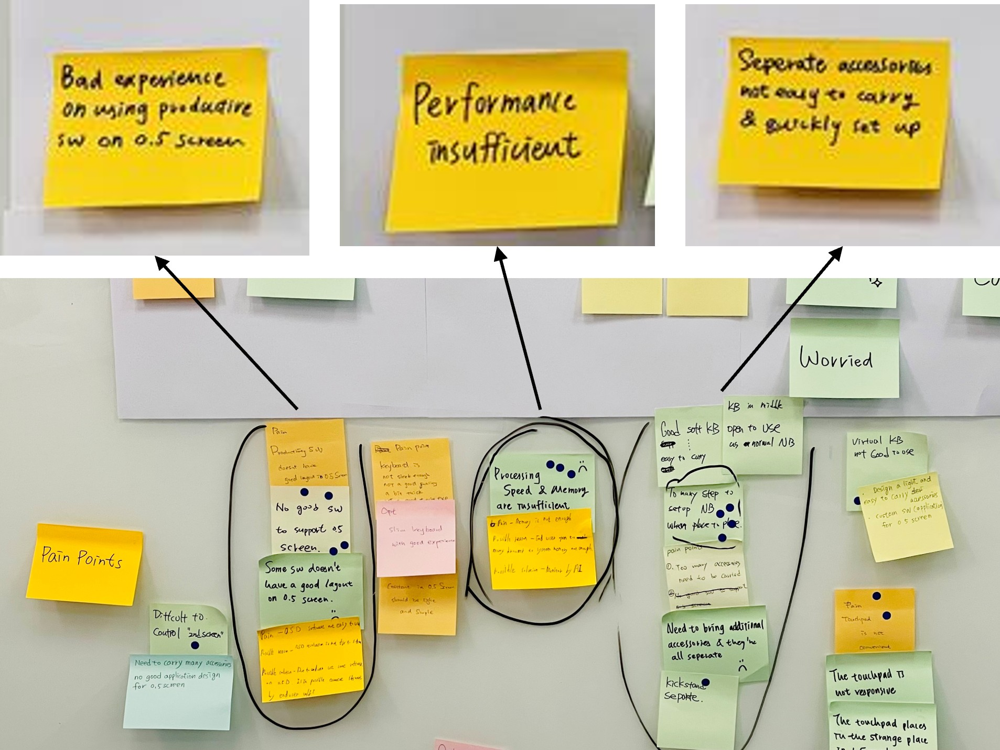
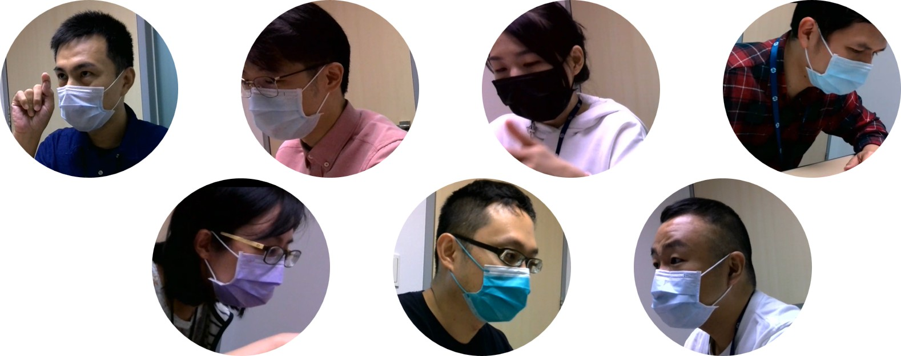
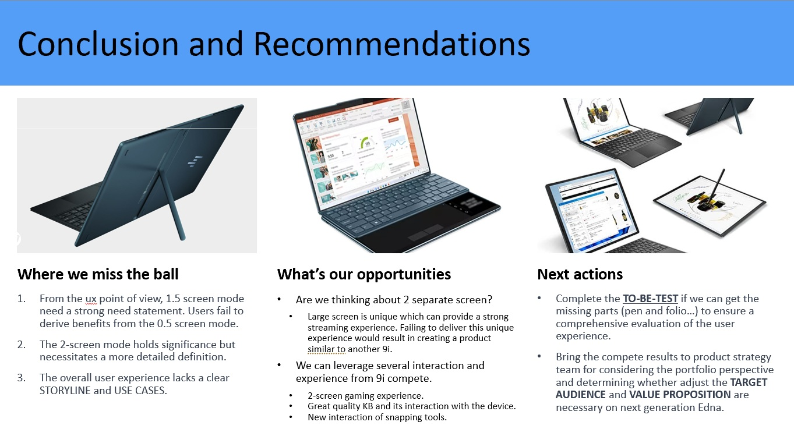
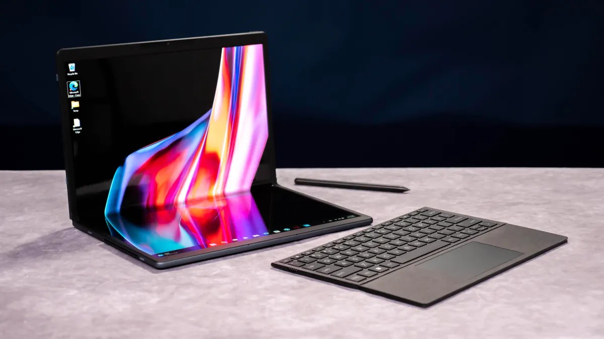

Dual-Screen Foldable Laptop
The Spectre Fold is a foldable dual-screen laptop supporting five distinct usage modes: Notebook, Notebook with 1.5 Screen, All-in-One, Clamshell, and Tablet. The goal of this research was to define the key experiences across all five modes, validate them through competitive benchmarking and hands-on user testing, and deliver actionable findings that shaped the product's hardware and software design decisions.
I was the sole UX researcher and experience curator on this project. My responsibility was to define the key user experiences across all five modes, then validate that the experience met user expectations through rigorous curation testing — bridging user needs with industrial design constraints.
— Lead UX Researcher & Experience Curator
- Competitor Analysis
- In-depth Interview
- User Journey Mapping
- Experience Curation
- Design Thinking Workshop
- Curation Testing
- Usability Findings
- Actionable Recommendations
Approach

Step 1. Competitive Analysis
To understand the existing landscape of dual-screen foldable devices, I conducted hands-on benchmarking of the two leading competitors: Lenovo ThinkPad X1 Fold 9i and Asus Zenbook 17 Fold. I evaluated each device across their key usage modes and conducted in-depth interviews with existing owners to uncover pain points, unmet needs, and moments of delight — building a clear picture of where there was an opportunity to differentiate.

Step 2. Experience Curation Planning
Drawing on competitive insights and user needs, I mapped each of the Spectre Fold's five modes to real-world user scenarios and defined the success criteria for each key experience. I worked closely with Industrial Design, Software, and PM teams through multiple iterative reviews to align on the prioritized hero experiences — making sure the research translated directly into product direction rather than staying on paper.

Step 3. Cross-Functional Workshop
I facilitated a design thinking workshop with the core team — Industrial Design, Product Management, and Engineering — to surface and validate pain points, brainstorm improvement directions, and align the team around user-centered priorities. Using structured activities including affinity mapping, pain point voting, and rapid ideation, the workshop produced clustered insights, solution sketches, and user journey maps that fed directly into the curation plan.

Step 4. Curation Testing
I recruited 8 NDA-signed participants for in-person, video-recorded hands-on testing sessions. Each session covered all five device modes, including keyboard Bluetooth pairing, AiO stand setup, pen input (note-taking, sketching, photo editing), streaming and entertainment in Clamshell mode, and window-snapping productivity workflows. Sessions were structured around realistic use-case scenarios to capture authentic reactions and surface usability friction points.

Step 5. Findings & Recommendations
I synthesized all testing observations into a structured findings report, prioritized by severity and frequency. Key finding areas included: mode discoverability (especially AiO mode), stand ergonomics and setup intuitiveness, Bluetooth keyboard pairing friction, pen input latency and palm rejection, and virtual keyboard sizing. Each finding was paired with a concrete design recommendation and delivered to the core team to inform the next development iteration.
Result
2
Competitors Analyzed
8
Testing Participants
30+
Usability Findings

Through a full-cycle research process — from competitive benchmarking to live curation testing — this project directly shaped the hardware and software design of the foldable dual-screen laptop. Findings contributed to mode simplification decisions, accessory design improvements, and onboarding experience revisions delivered to the product team.